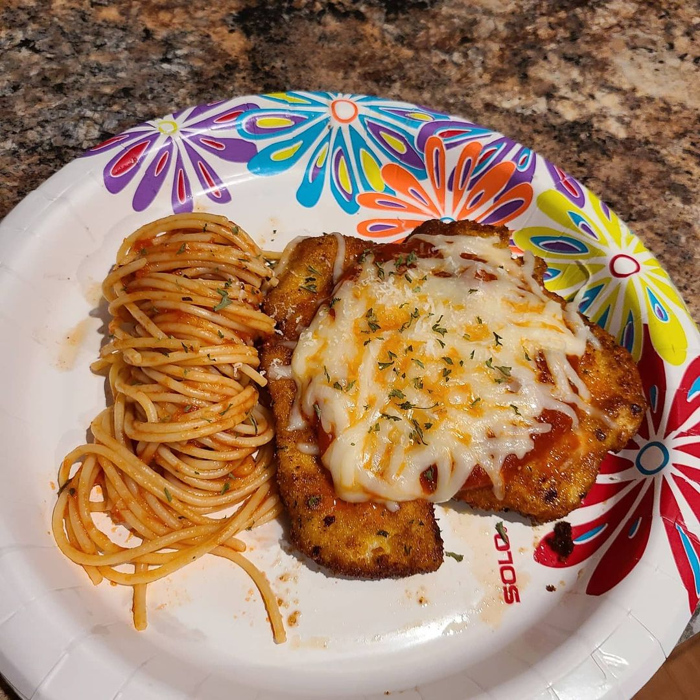

Hello there! You have found me. My name is Cameron and here's a little bit about myself! I am a 7 year veteran of the Navy where I spent all of my time in the field of Security. I enjoy gaming, although those gaming sessions do tend to be a bit lengthy at times, I do manage to keep my tasks and deadlines as a priority. My favorite games consist of The Last of Us, The Witcher 3, and Destiny 2 at the moment and I am even streaming on Twitch if you would like to check it out! My link will be down below! Another strong hobby of mine is cooking! A few examples of my favorite dishes are Chicken Parmesean, Steak Au Poivre, and my own Penne Florentine. Italian cuisine will always hold a special place in my heart due to the simplicity yet strong flavors within many of it's dishes.
